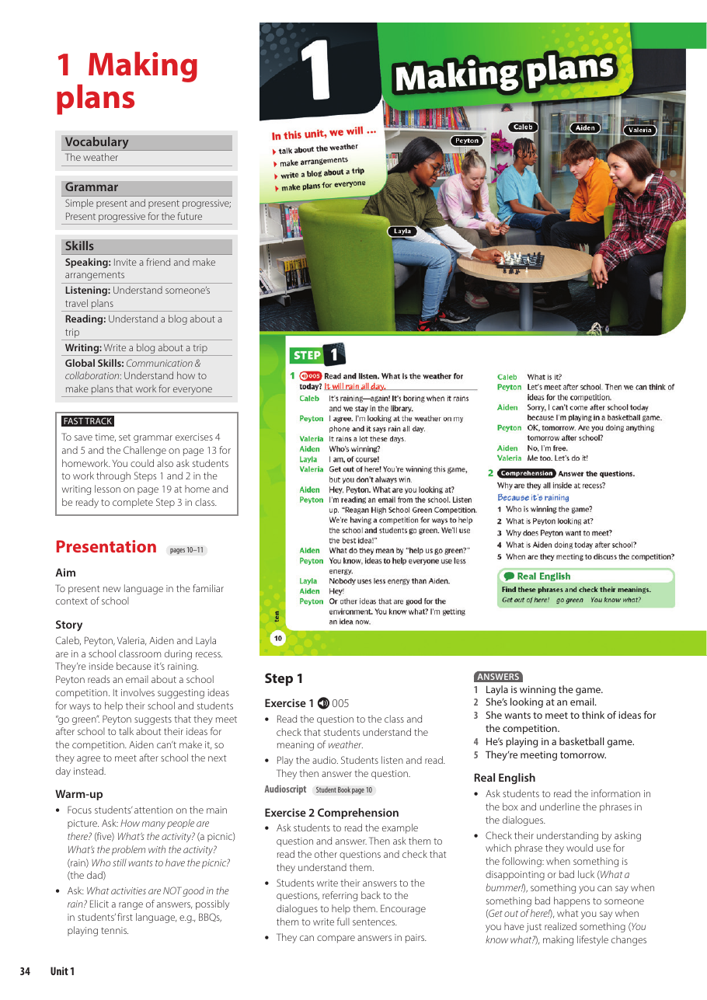
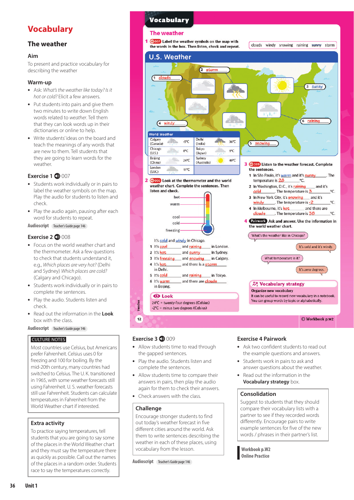
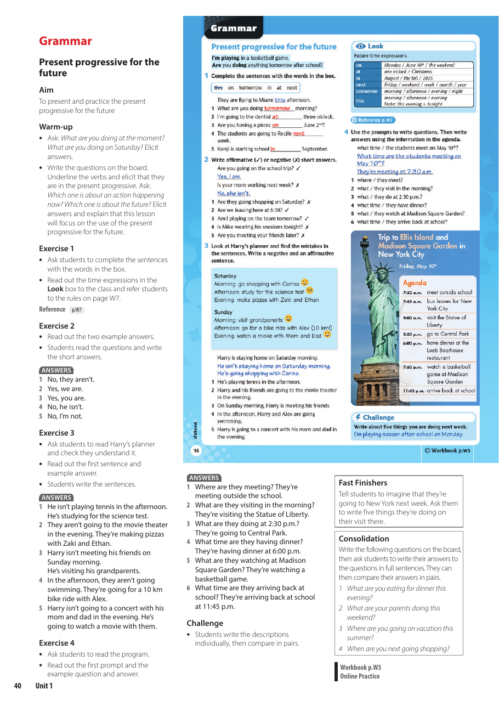
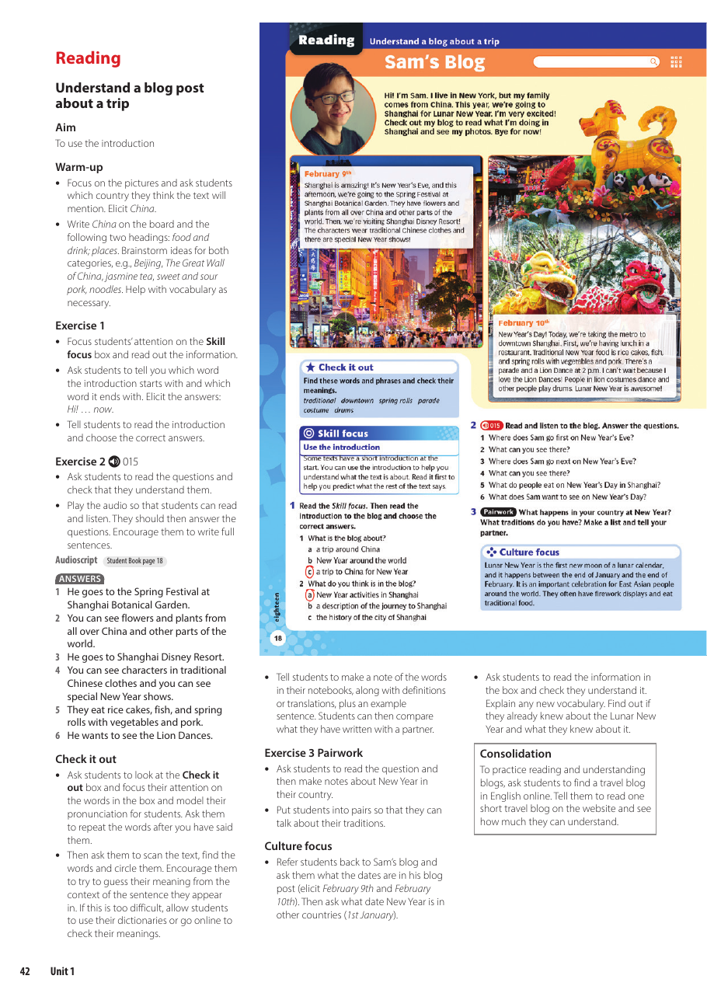

Unit 1: Making Plans
Today we will use English to invite people, make arrangements, talk about weather, understand travel plans, and present a plan that works for everyone.
What are you doing this weekend?
Useful language: I am... / I usually... / I am not sure yet.
What We Are Learning
Every part of the lesson supports the final speaking task.
Weather words and activity words.
Simple present vs present progressive.
Present progressive for arrangements.
Speaking, listening, reading, writing.
Group plan and role-play.
By the End, I Can...
Invite
I can invite a friend and respond politely.
Would you like to...?
Describe
I can describe the weather and connect it to a plan.
It is..., so...
Explain Plans
I can say what people are doing now and in the future.
I am meeting...
The Unit Story
The unit moves from simple conversations to a complete plan and a short travel blog.
Dialogues
Friends make plans and respond to invitations.
Travel Plans
People describe future arrangements with time and place.
Trip Blog
A writer describes a trip with details, adjectives, and plans.
Unit 1 Pages We Are Using
Use these as teacher references during the lesson. Avoid projecting copyrighted pages publicly outside class.




What's the Weather Like?
Students need weather vocabulary to choose activities and explain plans.
Clear Weather
sunnywarmhotIt is sunny and warm.
Bad Weather
rainystormywetIt is rainy today.
Cold Weather
coldsnowywindyIt is cold and windy.
Low Visibility
cloudyfoggydryIt is cloudy this morning.
Weather Changes the Plan
| Weather | Good Activity | Reason |
|---|---|---|
| Sunny | go to the park | because we can be outside |
| Rainy | watch a movie | because we can stay inside |
| Windy | fly a kite | because the wind helps |
| Cold | drink hot chocolate | because it keeps us warm |
Natural Reactions
These phrases help students sound natural in conversations.
What a bummer!
Use it when something is disappointing.
Model: "I can't go." "What a bummer!"
You know what?
Use it when you have an idea or realize something.
Model: "You know what? Let's meet earlier."
Get out of here!
Use it to show surprise.
Model: "We won!" "Get out of here!"
Simple Present = Habits and Routines
Meaning
Use the simple present for things that happen regularly.
subject + base verb
he / she / it + verb-s
Examples
I play basketball on Fridays.
She visits her aunt every summer.
We usually study after class.
Present Progressive = Happening Now
Form
am / is / are + verb-ing
Use it for actions happening now or around now.
Examples
I am studying now.
She is looking at an email.
They are playing a game.
Habit or Happening Now?
| Simple Present | Present Progressive | Clue Words |
|---|---|---|
| I play soccer on Saturdays. | I am playing soccer now. | usually, every day, now, today |
| She studies English twice a week. | She is studying English right now. | on Mondays, at the moment |
| They go shopping after school. | They are going shopping today. | after school, today |
Choose the Correct Tense
1
My brother usually ___ basketball after school.
Answer: plays
2
Listen! The students ___ a dialogue.
Answer: are practicing
3
We ___ outside school tomorrow.
Answer: are meeting
4
I ___ English every Tuesday.
Answer: study
Present Progressive for Future Plans
Use present progressive when the future plan is arranged.
Question
What are you doing on Friday?
What + be + subject + verb-ing?
Answer
I am visiting my aunt.
subject + be + verb-ing
Details
We are leaving at six o'clock.
time + place
Time Words Guide the Listener
Habit
usuallyevery dayon MondaysI usually play soccer.
Now
nowright nowat the momentI am studying now.
Future Plan
tomorrowthis weekendon FridayI am meeting Ana tomorrow.
Invitation Conversation
Open the conversation
Are you doing anything on Saturday?
What are you doing on Friday?
Would you like to go swimming?
Respond
That sounds great.
Sorry, I can't. I'm visiting my family.
What a bummer! Maybe next time.
Make the Plan Clear
| Information | Question | Model Answer |
|---|---|---|
| Activity | What are we doing? | We are watching a basketball game. |
| Time | What time are we meeting? | We are meeting at 5:30. |
| Place | Where are we meeting? | We are meeting outside school. |
| Reason | Why is it a good plan? | Because everyone likes sports. |
Listen for Plan Details
When students listen to plans, they should catch who, where, when, and what.
Who?
Who is going?
Where?
Where are they going?
When?
What time are they leaving?
What?
What are they doing there?
Understand a Blog About a Trip
Introduction
Who is writing? Where are they?
Frame: The writer is in...
Main Details
What is happening? What are the plans?
Frame: They are going to...
Culture
What traditions, places, or events are important?
Frame: One important tradition is...
Write with Useful Adjectives
Adjectives from the Unit
amazingincrediblefantasticawesomewonderfulcolorfulgreat
Blog Frame
Hi! This weekend, I am going to...
The weather is...
I am visiting...
It is a/an ___ place because...
Trips and Celebrations
The unit uses travel and celebrations to help students compare traditions and describe experiences.
Place
Where does the event happen?
It takes place in...
Activities
What do people do?
People usually...
Opinion
Why is it interesting?
In my opinion, it is...
Make Plans That Work for Everyone
Ask
What do you think?
Listen
Can you explain your idea?
Compare
Which plan is better for the group?
Agree
Let's choose this plan because...
Connect Ideas Clearly
| Connector | Use | Model Sentence |
|---|---|---|
| because | give a reason | I can't go because I am visiting my aunt. |
| however | show contrast | The park is fun. However, it is rainy. |
| therefore | show result | It is rainy. Therefore, we are staying inside. |
| for example | give an example | We can do indoor activities, for example, watch a movie. |
Build the Final Oral Task
Say the activity.
Add time and place.
Add weather or detail.
Say why it works.
Give a backup plan.
Model Group Response
Your Turn: Plan, Invite, Present
Work in groups of three or four. Prepare a short role-play or group explanation.
Your product must include
One invitation, one response, weather, time, place, reason, one connector, and one backup plan.
Success criteria
Everyone speaks. The plan is clear. The grammar is understandable. The group explains why the plan works.
Exit Ticket
1 Word
Write one weather word.
1 Phrase
Write one invitation phrase.
1 Sentence
Write one future arrangement.
1 Reflection
What do you need to practice?